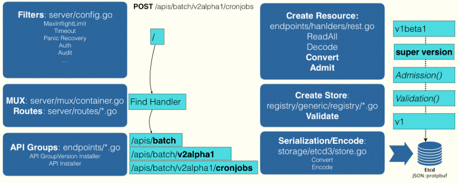

API对象
在Kubernetes中API对象是以树形结构表示的，一个API对象在Etcd里完整资源路径，是由Group（API组）、Version（API版本）和Resource（API资源类型）三个部分组成的。

如果现在要声明一个CronJob对象，那么YAML的开始部分会这么写，CronJob就是这个API对象的资源类型，Batch就是它们的组，v2alpha1就是它的版本
apiVersion: batch/v2alpha1
kind: CronJob
...
API解析
Kubernetes通过对API解析找到对应的对象，分为如下3步：
- 解析API的组
Kubernetes的对象分两种：
- 核心API对象（如Pod、Node），是不需要Group的，直接在
/api这个前缀下面进行解析 - 非核心API对象，在
/apis前缀下先解析出Group，根据batch这个Group找到/apis/batch，API Group的分类是以对象功能为依据的。
- 核心API对象（如Pod、Node），是不需要Group的，直接在
- 解析API对象的版本号
- 匹配API对象的资源类型
创建对象
在前面匹配到正确的版本之后，Kubernetes就知道要创建的是一个/apis/batch/v2alpha1下的CronJob对象，APIServer会继续创建这个Cronjob对象。创建过程如下图

- 当发起创建CronJob的POST请求之后，YAML的信息就被提交给了APIServer，APIServer的第一个功能就是过滤这个请求，并完成一些前置性的工作，比如授权、超时处理、审计等
- 请求进入MUX和Routes流程，MUX和Routes是APIServer完成URL和Handler绑定的场所。APIServer的Handler要做的事情，就是按照上面介绍的匹配过程，找到对应的CronJob类型定义。
- 根据这个CronJob类型定义，使用用户提交的YAML文件里的字段，创建一个CronJob对象。这个过程中，APIServer会把用户提交的YAML文件，转换成一个叫做Super Version的对象，它正是该API资源类型所有版本的字段全集，这样用户提交的不同版本的YAML文件，就都可以用这个SuperVersion对象来进行处理了。
- APIServer会先后进行Admission（如Admission Controller 和 Initializer）和Validation操作（负责验证这个对象里的各个字段是否何方，被验证过得API对象都保存在APIServer里一个叫做Registry的数据结构中）。
- APIServer会把验证过得API对象转换成用户最初提交的版本，进行系列化操作，并调用Etcd的API把它保存起来。
CRD
API插件CRD（Custom Resource Definition） 允许用户在Kubernetes中添加一个跟Pod、Node类似的、新的API资源类型，即：自定义API资源
举个栗子，添加一个叫Network的API资源类型，它的作用是一旦用户创建一个Network对象，那么Kubernetes就可以使用这个对象定义的网络参数，调用真实的网络插件，为用户创建一个真正的网络，这个过程分为两步
- 首先定义CRD
定义一个group为samplecrd.k8s.io， version为v1的API信息，指定了这个CR的资源类型叫做Network，定义的这个Network是属于一个Namespace的对象，类似于Pod。
apiVersion: apiextensions.k8s.io/v1beta1
kind: CustomResourceDefinition
metadata:
name: networks.samplecrd.k8s.io
spec:
group: samplecrd.k8s.io
version: v1
names:
kind: Network
plural: networks
scope: Namespaced
- 对象实例化
实例化名为example-network的Network对象，API组是samplecrd.k8s.io，版本是v1。
apiVersion: samplecrd.k8s.io/v1
kind: Network
metadata:
name: example-network
spec:
cidr: "192.168.0.0/16"
gateway: "192.168.0.1"
Network对象YAML文件，名叫example-network.yaml,API资源类型是Network，API组是samplecrd.k8s.io，版本是v1
Kubernetes的声明式API能够对API对象进行增量的更新操作：
- 定义好期望的API对象后，Kubernetes来尽力让对象的状态符合预期
- 允许多个YAML表达，以PATCH的方式对API对象进行修改，而不用关心原始YAML的内容
基于上面两种特性，Kubernetes可以实现基于API对象的更删改查，完成预期和定义的协调过程。
因此Kubernetes项目编排能力的核心是声明式API。
Kubernetes编程范式即：如何使用控制器模式，同Kubernetes里的API对象的“增、删、改、查”进行协作，进而完成用户业务逻辑的编写过程。
kubectl apply
kubectl apply是声明式的请求，下面一个Deployment的YAML的例子
apiVersion: apps/v1
kind: Deployment
metadata:
name: nginx-deployment
spec:
selector:
matchLabels:
app: nginx
replicas: 2
template:
metadata:
labels:
app: nginx
spec:
containers:
- name: nginx
image: nginx
ports:
- containerPort: 80
然后用kubectl apply创建这个Deployment
$ kubectl apply -f nginx.yaml
修改一下nginx里定义的镜像
apiVersion: apps/v1
kind: Deployment
...
spec:
containers:
- name: nginx
image: nginx:1.7.9
执行kubectl apply命令，触发滚动更新
$ kubectl apply -f nginx.yaml
后面一次的 kubectl apply命令执行了一个对原有API对象的PATCH操作，这是声明式命令同时可以进行多个写操作，具有Merge的能力；而像 kubectl replace命令是用新的YAML替换旧的，这种响应式命令每次只能处理一次写操作。
声明式API的应用
Istio通过声明式API实现对应用容器所在POD注入Sidecar，然后通过iptables劫持POD的进站和出站流量到Sidecar，Istio通过对Sidecar下发策略来实现对应用流量的管控，继而实现微服务治理。
在微服务治理中，对Envoy容器的部署和对Envoy代理的配置，应用容器都是不感知的。Istio是使用Kubernetes的Dynamic Admission Control来实现的。
在APIServer收到API对象的提交请求后，在正常处理这些操作之前会做一些初始化的操作，比如为某些pod或容器加上一些label。这些初始化操作是通过Kubernetes的Admission Controller实现的，在APIServer对象创建之后调用，但这种方式的缺陷是需要将Admission Controller的代码编译到APIServer中，这不是很方便。Kubernetes 1.7引入了热插拔的Admission机制，它就是Dynamic Admission Control，也叫做Initializer。
如下定义的应用的Pod，包含一个myapp-container的容器。
apiVersion: v1
kind: Pod
metadata:
name: myapp-pod
labels:
app: myapp
spec:
containers:
- name: myapp-container
image: busybox
command: ['sh', '-c', 'echo Hello Kubernetes! && sleep 3600']
Istio要做的就是在这个Pod YAML被提交给Kubernetes之后，在它对应的API对象里自动加上Envoy容器的配置，使对象变成如下的样子：
apiVersion: v1
kind: Pod
metadata:
name: myapp-pod
labels:
app: myapp
spec:
containers:
- name: myapp-container
image: busybox
command: ['sh', '-c', 'echo Hello Kubernetes! && sleep 3600']
- name: envoy
image: lyft/envoy:845747b88f102c0fd262ab234308e9e22f693a1
command: ["/usr/local/bin/envoy"]
...
这个pod多了一个envoy的容器，Istio具体的做法是
- 定义Envoy容器的Initializer，并以ConfigMap的方式保存到Kubernetes中
- Istio将编写好的Initializer作为一个Pod部署在Kubernetes中
Envoy容器的ConfigMap定义，
apiVersion: v1
kind: ConfigMap
metadata:
name: envoy-initializer
data:
config: |
containers:
- name: envoy
image: lyft/envoy:845747db88f102c0fd262ab234308e9e22f693a1
command: ["/usr/local/bin/envoy"]
args:
- "--concurrency 4"
- "--config-path /etc/envoy/envoy.json"
- "--mode serve"
ports:
- containerPort: 80
protocol: TCP
resources:
limits:
cpu: "1000m"
memory: "512Mi"
requests:
cpu: "100m"
memory: "64Mi"
volumeMounts:
- name: envoy-conf
mountPath: /etc/envoy
volumes:
- name: envoy-conf
configMap:
name: envoy
这个ConfigMap的data部分，正是一个Pod对象的一部分定义，其中可以看到Envoy容器对应的Container字段，以及一个用来声明Envoy配置文件的volumes字段。Initializer要做的就是把这部分Envoy相关的字段，自动添加到用户提交的Pod的API对象里。但是用户提交的Pod里本来就有containers和volumes字段，所以Kubernetes在处理这样的更新请求时，就必须使用类似于git merge这样的操作，才能将这两部分内容合并在一起。即Initializer更新用户的Pod对象时，必须使用PATCH API来完成。
Envoy Initializer的pod定义
apiVersion: v1
kind: Pod
metadata:
labels:
app: envoy-initializer
name: envoy-initializer
spec:
containers:
- name: envoy-initializer
image: envoy-initializer:0.0.1
imagePullPolicy: Always
```
`envoy-initializer:0.0.1` 镜像是一个自定义控制器（Custom Controller）。Kubernetes的控制器实际上是一个死循环：它不断地获取实际状态，然后与期望状态作对比，并以此为依据决定下一步的操作。
对Initializer控制器，不断获取的实际状态，就是用户新创建的Pod，它期望的状态就是这个Pod里被添加了Envoy容器的定义。它的控制逻辑如下：
```go
for {
// 获取新创建的 Pod
pod := client.GetLatestPod()
// Diff 一下，检查是否已经初始化过
if !isInitialized(pod) {
// 没有？那就来初始化一下
//istio要往这个Pod里合并的字段，就是ConfigMap里data字段的值
doSomething(pod)
}
}
func doSomething(pod) {
//调用APIServer拿到ConfigMap
cm := client.Get(ConfigMap, "envoy-initializer")
//把ConfigMap里存在的containers和volumes字段，直接添加进一个空的Pod对象
newPod := Pod{}
newPod.Spec.Containers = cm.Containers
newPod.Spec.Volumes = cm.Volumes
// Kubernetes的API库，提供一个方法使我们可以直接使用新旧两个Pod对象，生成 patch 数据
patchBytes := strategicpatch.CreateTwoWayMergePatch(pod, newPod)
// 发起 PATCH 请求，修改这个 pod 对象
client.Patch(pod.Name, patchBytes)
}
Envoy机制正是利用了Kubernetes能够对API对象做增量更新，这是Kubernetes声明式API的独特之处。